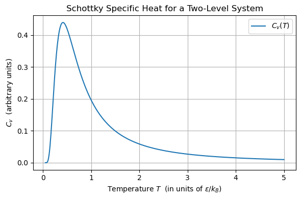

Uke 2 – Statistisk mekanikk, Boltzmann-fordelingen og Partisjonsfunskjonen#
Læringsutbytte
Etter å ha jobbet med dette temaet skal du kunne:
Forklare hva Boltzmann fordelingen betyr, og hvor den kommer fra
Forklare hva partisjonsfunsjonen \(Q\) er og hvordan den henger sammen med \(q\) for ulike type partikler
Bruke q for enkle modeller til å bestemme termodynamiske størrelser som varmekapasitet
Diskusjonsoppgaver#
Tema for denne ukas oppgaver er Boltzmann-fordelingen og den relaterte partisjonsfunsjonen. I forrige uke så vi at systemer drives mot maksimering av entropi, og som Boltzman viste er entropien, \(S\), direkte knyttet til multiplisiteten, \(\Omega\), av mikrotilstander som hver makrotilstand kan ha gjennom:
Kun ved å se på hvilken tilstand som hadde høyest multiplisitet, og ved å anta at alle mikrotilstander er like sannsynlige, kunne vi bruke enkle modeller til å forklare hvorfor en gass vil fylle rommet den er i, hvorfor polymerer trekker seg sammen, hvorfor vesker blandes, og hvorfor energi utjevnes når to stoffer settes i termisk kontakt. (Diskusjonsoppgaver 2-5 i uke 1).
Nå skal vi se på hva som skjer dersom det er begrensinger på hvilke mikrotilstander et system kan være i.
Oppgave 1#
a) Litt repetisjon: Hva er multiplisitet?
Svar Multiplisiteten er antallet måter en gitt tilstand eller hendelse kan realiseres på, for N skillbare partikler fortelt på 2 kategorier A og B der vi ikke bryr oss om rekkefølgen er multiplisiteten for å ha \(n_A\) partikler i A gitt ved:
b) Hva er sammenhengen mellom entropi og likevekt, hva med den deriverte av entropien?
Svar Ved likevekt er entropien maksimert og den deriverte av entropien vil da være 0.
c) Hvis vi har et 2 nivå-system (f.eks. 2 bokser A og B, to energinivåer 1 og 2, to mulige konformasjoner av en et protein), og N partikler. Hvilken fordeling av de N partiklene på de 2 tilstandene vil ha størst multiplisitet?
Svar Vi får størst multiplisitet når det er like mange partikler i hver kategori. Altså når \(n_A=N/2\)
d) Gitt at partiklene er fordelt slik at entropien er maksimert, hva er sannsynligheten for å finne en partikkel i nivå 1 og nivå 2?
Svar Siden det er N/2 partikler i hvert nivå som maksimerer multiplisiteten og dermed også entropien, vil det være like sansynlig å finne en partikkel i hver av de to nivåene: \(p=1/2\)
e) Hva om vi hadde t-nivåer, der N partikler kan fordeles på nivå 1, 2, 3, …, t. Hvilken fordeling gir størst multiplisitet? Gitt at entropien er maksimert, hva er sannsynligheten for å finne en partikkel i et gitt nivå?
Svar Uten noen annen begrensing får vi den største multiplisiteten når det er like mange partikler i hver tilstand:
Dermed er sannsynligheten for å finn en partikkel ved et gitt nivå 1/t
f) I oppgavene over har sett på sammenhengen mellom multiplisitet og sannsynligheten for å finne en partikkel i et gitt nivå, men vi er ikke de første til å gjøre det. Vi har allerede sett at entropi kan utrykkes med \( S=k_{b} \ln(\Omega)\), men entropi kan også utrykkes med sannsynligheter, hvordan ser det utrykket ut?
Svar Her skal vi fram til Gibbs’ definisjon av entropi:
eller per partikkel
hvor \(p_i\) er sannsynligheten for å finne en partikkel i nivå \(i\).
Oppgave 2: Hva er sannsynligheten for å finne en partikkel i et gitt nivå når entropien er maksimert OG vi har en konstant totalenergi?#
Vi ser igjen på et fler-nivå system med N partikler, hvor hver av disse kan være i ett av \(t\) energinivåer, med energier \(\varepsilon_1\) ,\(\varepsilon_2\), … , \(\varepsilon_t\). De N partiklene er fordelt slik at det er \(n_1\) partikler i energi nivå 1, \(n_2\) partikler i energinivå 2 og så videre. Altså er det “n_i” partikler i energi-nivå \(i\).
a) Gitt at vi har \(n_i\) av N partikler i enrginivå \(i\). Hva er sannsynligheten, \(p_i\), for at en tilfeldig valgt partikkel er i energinivå \(i\)? Hva vet vi om \(\sum_{i=1}^t p_i\)?
Svar Sannsynligheten er:
Som er Antall ønskelige delt på antall mulige hendelser. Vi vet også at summen av sannsynlighetene må bli en, altså at:
b) Vi antar at den totale energien i systemet er begrenset til en konstant verdi \(E\). Hvordan kan totalenergien utrykkes når vi vet at vi har \(n_i\) partikler, hver med energi \(\varepsilon_i\)?
Svar Totalenergien er gitt ved antallet partikler i energinivået ganget med energien til det nivået, summert over alle de t energinivåene:
c) Hvis vi antar et konstant antall partikler N, og en konstant total energi \(E\), hva kan vi si om gjennomsnittsenergien \(\langle \varepsilon \rangle\) per partikkel? Bruk den statistiske definisjonen av gjennomsnitt til å finne et utrykk for \(\langle \varepsilon \rangle\)
Hint:
Gjennomsnittsverdien, også kalt forventningsverdien, av en variabel \(k_i\) som kan ha en av \(i=1,2,...,t\) verdier med hver sin sannsynlighet \(p_i\) kan defineres som:
Svar
Den gennomsnittlige energien er gitt ved utrykket:
Den siste likheten følger direkte fra svaret i oppgave a) og er identisk med definisjonen av gjennomsnitt fra statisktikken.
d) Vi ønsker nå å finne sannsynlighetene, \(p_i\) for hvert nivå som gir den maksimale entropien, altså den mest sannsynlige fordelingen av partikler når systemet er i likevekt. Dette kan vi gjøre ved bruke Gibbs definisjon av entropi per partikkel:
Merk at dette er en flervariabel funksjon, som avhenger \(p_1,p_2,p_3,...,p_t\). Hva er den totalderiverte, dS, av denne funksjonen? Og hvordan bruker vi denne til å finne maksimum entropi?
For å gjøre matten litt enklere kan heller se på entropien delt på \(k_B\):
Dette går fint fordi k_B er en konstant som vil bli normalisert bort i maksimeringen av entropien.
Svar S er en flervariabel funskjon av \(p_1, p_2, ... p_t\) dermed vil den totalderiverte være gitt ved:
eller mer generelt kan vi skrive:
For å finne maksimumsentropien må den totalderiverte være 0, som vi får når alle partiellderiverte er lik null. altså at
for hver \(i\).
e) Fra deloppgave a) og c) har vi fått to betingelser, som vi videre kaller for g(p) og h(p), knyttet til sannsynligheten, den første handler om summen av sannsynlighetene \(p_i\) og den andre om gjennomsnittsenergien per partikkel. Vi antar nå at dere har funnet disse i henholdsvis deloppgave a) og deloppgave c), men dere kan dobbeltsjekke svarene under før dere går videre:
Delsvar:
a) Summen av alle sannsynlihetene \(p_i\) må være lik 1
c) Gjennomsnittsenergien per partikkel er gitt ved:
For å finne sannsynlighetsfordelingen \(p=[p_1,p_2,...,p_t]\) som maksimerer entropien \(S(p)\) under disse betingelsene som vi kaller \(g(p)\) og \(h(p)\), kan vi bruke Lagrange multiplikatorer. Dette gir oss et sett av likninger på formen:
hvor \(\alpha\) og \(\beta\) er Lagrange multiplikatorene. Vi har egentlig én ligning per verdi av \(i\), men formen på disse ligningene og multiplikatorene er de samme. Dermed trenger vi bare å løse en av de med hensyn på en generell variabel \(p_i\).
Finn hver av de tre partiellderiverte i ligningen over.
Svar
Her har vi brukt reglene for partiellderiverte, siden vi kun deriverer med hensyn på én \(p_i\) behandler vi alle andre \(p_j\ \mathrm{for}\ j\neq i\) som konstanter. Dermed blir utrykket ekvivalent med \(\frac{\partial (x \cdot \ln{x})}{\partial x}\) som vi kan bruke kjærneregelen på.
Samme tankegang gjelder for:
f) Sett inn de partiellderiverte dere fant i likningen over og løs med hensyn på \(p_i\). Hint: \(\alpha\) og \(\beta\) skal inngå i svaret.
Svar Fra forrige oppgave har vi utrykkene for de partiellderiverte vi setter disse inn i likningen for maksimering av entropi med Lagrangemultiplikatorer:
Vi kan nå løse med hensyn på \(p_i\) ved å flytte over:
og ta eksponentialen på begge sider:
g) Vi husker på at \(\sum_{i=1}^t p_i = 1\) og dermed kan vi dele utrykket for \(p_i\) på \(\sum_{i=1}^t p_i\), bruk dette til å bli kvitt \(\alpha\) og forenkle utrykket mest mulig. I hintet under får du se hvordan det endelige utrykke skal se ut til slutt.
Hint:
Svar Siden summen av sansynligetene må være 1 så har vi:
dermed kan vi dele utrykket for \(p_i\) fra forrige deloppgave på \(\sum_{i=1}^t e^{-1-\alpha-\beta\varepsilon_i}\) for det er det samme som å dele på 1:
siden hverken “1” eller \(\alpha" avhenger av \)i$ kan disse faktoriseres ut av summen:
h) Gratulerer dere har nå kommet fram til Boltzmann fordelingen! Den forteller oss hvordan partiklene er fordelt på de ulike energinivåene gitt en begrenset totalenergi og maksimal entropi.
Det kan vises at Lagrangemultiplikatoren \(\beta\) er gitt ved:
Sett inn dette utrykket for \(\beta\) inn i utrykket for \(p_i\).
Hvordan fordeles de \(N\) partiklene seg på de \(t\) energinivåene når temperaturen \(T\) blir veldig veldig høy, les \(T \rightarrow \infty \) ?
Hva med når temperaturen blir veldig lav og går mot absolutt null, \(T \rightarrow 0 \). ?
Hva kan vi si om entropien i disse to ekstremtilfellene?
Svar
Når vi setter inn for \(\beta\) for vi:
Når T blir veldig stor (går mot uendelig), går \(e^{-\frac{\varepsilon_i}{k_BT}}\) mot \(e^0=1\). Da får vi:
Dette betyr at alle energinivåene blir like sansynlige med sansynlighet \(p_i=1/t\) og vi kan forventa at partiklene er likt fordelt på de t energinivåene. Dette tilsvarer maksimum entropi.
Hvis T går mot null, så vil alle energitiltander over grunntilstanden som er definert med \(\varepsilon_1=0\) være tomme ettersom at:
Altså vil alle partiklene være i grunntilstanden, og entropien er per definisjon 0.
Oppgave 3: Litt om partisjonsfunksjonen#
Som vi så i oppgaven over er gir Boltzmann fordelingen sannsynligheten \(p_i\) for å finne én partikkel i energinivå \(e_i\):
Nevneren i dette utrykket kalles for den molekylære partisjonsfunksjonen \(q\):
Da kan vi skrive:
a) Hvilken “funksjon” har det rent matematisk å dele på \(q\)?
Svar Dette sørger for at sansynlikhetene blir normalisert riktig, slik at de summerer til 1.
b) Fra forelesning har dere kanskje hørt at vi kan tenke på partisjonsfunksjonen som et mål på hvor mange av energitilstandene er tilgjengelige ved en gitt temperatur. Hva menes med dette, og hvordan kan vi se det?
Hint: Skriv ut et par ledd av \(q\) og tenk på hvilken av variablene som er bestemt av systemet og som vi dermed ikke kan endre, og hvilke vi kan styre.
Svar
Energinivåene \(\varepsilon_1,\varepsilon_2,\varepsilon_3,...\) bestemmes av modellen vi bruker og er vanlighvis ikke noe vi kan styre. \(k_B\) er en konstant og dermed også gitt. Det eneste vi har eksperimentell kontroll over er temperaturen T. Når den temperaturen er høy nok til at den termiske energien \(k_bT\) er på størrelse med en gitt \(\varepsilon_i\) vil mange partikler være i det energinivået. Men dersom \(\varepsilon >> k_BT\) vil det være svært få partikler i det energinivået.
c) Vi bruker symbolet \(q\) når vi snakker om partisjonsfunksjonen for én partikkel, dette kan vi tenke på som sannsynlighetsfordelingen for at den partikkelen er i et gitt energinivå. Om vi har N partikler som er uavhengige og skillbare er den totale partisjonsfunksjonen gitt ved å multiplisere sammen partisjonsfunksjonene for hver partikkel:
Hva er den totale partisjonsfunsjonen \(Q\) dersom partiklene er uavhengige, men uskillbare? Hvorfor er dette slik?
Svar For uavhengige, men uskillbare partikler er:
Når vi kan skille mellom partiklene så vil det være to forkjellige tilstander om partikkel A er i energivinå \(\varepsilon_i\) og partikkel B er i energinivå \(\varepsilon_j\), eller motsatt. Dermed kan partisjonsfunskonene ganges sammen som i utrykket over. Men når vi ikke kan skille mellom A og B så er det det samme det er partikkel A som er energinivå \(\varepsilon_j\) og partikkel B som er energinivå \(\varepsilon_i\) eller motsatt, for vi ser ikke forskjell. Derfor er det feil å telle disse som to ulike tilstander og en god tilnærming for hvor mye vi overteller er N!, som vi deler på for å kompansere for overtellingen.
Oppgave 4: Fra partisjonfunsjon til termodynamiske størrelser#
Partisjonsfunksjonen kan være svært nyttig ettersom at vi kan bruke den til å bestemme veldig mange makroskopiske termodynamiske størrelser for et system, slik som indre energi, entropi og varmekapasitet for å nevne noen. Her skal vi begynne med et eksempel fra vår kjente 2-nivå model, som i dette tilfelle også kalles for Schottky-modellen.
Vi har N partikler som er uavhengige og skillbare, hver partikkel kan enten være i grunntilstand med energi \(\varepsilon_1=0\) eller i en eksitert tilstand med energi \(\varepsilon_2=\varepsilon\).
a) Hva er den molekylære partisjonsfunksjonen \(q\) for dette systemet?
Svar
b) Hva er den gjennomsnittlige energien per partikkel \(\langle \varepsilon \rangle\) utrykket med \(\varepsilon\) og \(k_BT\)? Hvilken verdi går \(\langle \varepsilon \rangle\) mot når \(T \rightarrow \infty \)?
Svar Gjennomsnittsenergien er gitt ved:
fra partisjonsfunksjonen vet vi at:
dermed er gjennomsnittsenergien:
Når \(T \rightarrow \infty \) vil \(e^{-\frac{\varepsilon}{k_BT}} \rightarrow 0\). Dermed får vi:
At gjennomsnittsenergien er halparten av \(\varepsilon\) er en annen måte å si at halvparten av partiklene vil være i grunntilstanden og halvparten vil være i eksitert tilstand.
c) Hva er den totale indre energien \(U\) i systemet, utrykt med \(N\) og \(\langle \varepsilon \rangle\)
Svar Den indre energien blir da:
d) Bruk utrykket for \(\langle \varepsilon \rangle\) fra b), \(U\) fra oppgave c) og definisjonen av varmekapasitet:
til å finne varmekapasiteten for dette systemet.
Hint for derivasjonen:
der \(\beta = 1/k_BT\) og partisjonsfunksjonen utrykkes med \(\beta\)
bruk da derivasjonsregelen:
Svar Vi bruker hintet og gjør et variabelskifte \(\beta = 1/k_BT\) slik at vi utrykker de to partielderiverte som:
Vi bruker derivasjonsregelen med \(u=\varepsilon\cdot e^{-\beta\varepsilon}\) og \(v={1+e^{-\beta\varepsilon}}\)
slik at:
og
dermed:
Varmekapasiteten blir da:
# Schottky specific heat C_v(T) for a two-level system
# C_v = (N / (k_B T^2)) * [ - ε^2 exp(-ε / (k_B T)) / (1 + exp(-ε / (k_B T)))^2 ]
import numpy as np
import matplotlib.pyplot as plt
# Physical parameters (choose convenient units)
k_B = 1.0 # Boltzmann constant (set to 1 in chosen units)
epsilon = 1.0 # Level spacing ε (also set to 1 in same units)
N = 1.0 # Number of particles (just a prefactor here)
# Temperature range: from small fraction of ε/k_B up to several times ε/k_B
T_min = 0.05 * epsilon / k_B
T_max = 5.0 * epsilon / k_B
T = np.linspace(T_min, T_max, 500)
# Define C_v(T) according to the given formula
x = epsilon / (k_B * T)
Cv = N * (epsilon**2 / (k_B * T**2)) * np.exp(-x) / (1.0 + np.exp(-x))**2
# Plot
plt.figure(figsize=(6, 4))
plt.plot(T, Cv, label=r"$C_v(T)$")
plt.xlabel(r"Temperature $T$ (in units of $\epsilon/k_B$)")
plt.ylabel(r"$C_v$ (arbitrary units)")
plt.title("Schottky Specific Heat for a Two-Level System")
plt.grid(True)
plt.legend()
plt.tight_layout()
plt.show()

Oppgave 5 (Ekstra utfordring): Idealgassloven fra en enkel gittermodell#
Vi har en enkel gittermodell hvor du har \(N\) atomer og \(M\) hvor plasser disse atomene kan være. I forrige uke så vi i diskusjonsoppgave 2 at denne modellen kan brukes til å forklare hvorfor en gass vil fylle rommet den er i. Denne samme modellen kan vi nå bruke til å utlede idealgassloven. Ettersom at denne loven gjelder for gass-molekyler som ikke interagerer med hverandre er den mest riktig for tynne gass-blandinger der \(M >> N\)
a) Hva er multiplisiteten for \(N\) atomer i \(M\) bokser, og hva er entropien?
b) Vi skal bruke sammenhengen mellom entropi, \(S\), og trykk \(p\):
Legg merke til at vi ikke har volumet \(V\), men vi har antall bokser \(M\), og vi kan anta hver boks har volum \(v_0\).
Bruk kjerneregelen til å utrykke ligningen over med hensyn på \(\frac{\partial S}{\partial M}\)
c) Deriver utrykket for entropi fra a) med hensyn på \(M\).
d) Bruk utrykkene dere fant i de tidligere deloppgavene a) b) og c) og Taylor tilnærmingen med to ledd:
til å utlede den idealgassloven:
Regneoppgaver#
Oppgave 6#
Vi ser på et system med \(N=12\) partikler og \(4\) energinivåer hvor energien er hhv. \(0\), \(1\), \(2\) og \(3\).
a) Hvilken fordeling av partiklene vil maksimere multilplisiteten, \(\Omega\)? Regn ut \(\Omega\) og total energi \(E\).
Hint
Multiplisiteten for et fler-nivå system kan vi finne ved \(\frac{N!}{n_1!n_2!...n_t!}\)
Svar
Multiplisiteten til flernivåsystemet er gitt ved
Multiplisiteten blir størst når partiklene er gjevt fordelt, så for 4 nivåer og 12 partikler har vi at:
Den totale energien får vi ved å summere antall partikler per energinivå multiplisert med energien til det nivået:
b) Ved en gitt temperatur er den totale energien kun \(E=10.96\), og fordelingen du kom frem til i oppgave a er ikke lenger mulig. Hvilken fordelingsfunksjon vil nå beskrive fordelingen av partiklene?
Den mest sannsynlige fordelingen av partikler i \(t\) energinivåer når totalenergien er begrenset er gitt av Boltzmann-fordelingen, som gir sansynligheten \(p_i\) for at en partikkel er i nivå \(i\) :
c) Regn ut summen av Boltzmann-leddene \(\sum{_i=1}^4 {e^{-\frac{\varepsilon_i}{k_BT}}}\) når vi antar at \(k_BT = 2\) ved den gitte temperaturen.
d) Finn sannsynlighetene \(p_i\) for hvert energinivå. Hvor mange partikler forventer du nå å finne i de ulike energinivåene?
Sannsynlighetene er gitt fra Boltzmann: $\( p_i = \frac{e^{-\frac{\varepsilon_i}{k_BT}}}{\sum_{i=1}^t e^{-\frac{\varepsilon_i}{k_BT}}}\)$
Circa antall partikler per energinivå er gitt ved:
Dette er antallet partikkler vi forventer å ha i hver skall, og med N=12 så blir dette desimaler. Partikler kommer selvølgelig bare i heltall og til enhver tid vil vi ha et heltall antall partikler i hvert energinivå, og verdiene vi fant kan vi se på som antall partikler hvert nivå har i gjennomsitt.
e) Regn ut gjennomsnittsenergien per partikkel.
Oppgave 7#
I Boltzmanns lov,
kan vi se på partisjonsfunksjonen, \(Q\), som det effektive antallet tilstander som er tilgjengelige for et system.
a) Hvordan tolker du grenseverdiene \(E_j \rightarrow 0\) og \(T \rightarrow \infty\)?
Svar \(E_j \rightarrow 0\) betyr at energien til tilstand j mot 0, og i vårt tilfelle kan vi se på det som at forskjellen i energinivåene til systemet er lave. \(T \rightarrow \infty\) betyr at temperaturen er meget høy, noe som gjør flere energitilstander tilgjengelige.
b) Bruk grenseverdiene for energi og temperatur, \(E_j \rightarrow 0\) eller \(T \rightarrow \infty\), til å vise at for et system med t tilstander vil alle tilstander være like befolkede når temperaturen er høy eller energien veldig lav.
Svar Når \(E_j \rightarrow 0\) (energien til tilstand j mot 0), eller når \(T \rightarrow \infty\) (temperaturen er høy) blir alle tilstander like befolket, og vi får at
Skriver vi opp \(Q\) på formen
Og dermed får vi at \(Q\rightarrow t\)
Dette viser oss at når temperaturen er høy eller forskjellen i energi er lav, vil alle tilstander være like sannsynlige (like befolkede).
c) Hva skjer i det motsatte tilfellet, hvor \(E_{j\neq 1} \rightarrow \infty\) eller \(T \rightarrow 0\).
Svar
Siden vi antar at grunntilstanden fortsatt har energi 0, har vi at \(p_1=1 \implies Q\rightarrow 1\).
Når temperaturen er lav eller energien til de eksiterte tilstandene svært høy, vil kun grunntilstanden være den effektivt befolkede tilstanden.
Oppgave 8#
Vi ser nå på et degenerert to-nivå system hvor grunntilstanden er gitt ved \(E_0=0\), og \(g_0\)=1, og \(E_1\approx k_BT \approx 4\cdot 10^{-21} J\) og \(g_1=3\). Temperaturen er \(298\)K, og Boltzmanns konstant er \(k_B=1.380649\cdot 10^{-23}\).
a) Finn partisjonsfunksjonen, \(Q\).
Svar $\(Q=\sum_{j=1}^{t}{e^{-E_i/k_BT}} =g_0e^{-E_0/k_BT}+g_1e^{-E_1/k_BT} = 1+3e^{-E_1/k_BT}\)$
Siden \(E_1\approx k_BT\) får vi at
b) Bruk svaret ditt fra oppgave a til å finne den indre energien, \(U\).
Hint
Finn først \(\frac{\partial Q}{\partial \beta}\), og bruk deretter \(U = -\frac{1}{Q}\frac{\partial Q}{\partial \beta}\)
Svar Vi ønsker å bruke at den indre energien er gitt ved \(U = -\frac{1}{Q}\frac{\partial Q}{\partial \beta}\), og derfor finner vi først \(\frac{\partial Q}{\partial \beta}\), der \(\beta = 1/k_BT\)
Bruker igjen at \(E_1\approx k_BT\):
c) Bruk $\(S = k_B\ln{Q}+k_B(\frac{U}{T})\)$ til å finne entropien.
Oppgave 9#
I forrige ukes diskusjonsoppgaver skulle dere finne en oversettelse for “distinguishable” og “indistinguishable” partikler, og i oppgave 3 denne uken så dere at dette hadde en betydning for hvordan vi uttrykker den totale partisjonsfunksjonen.
For skillbare partikler er \(Q=q^N\), mens for uskillbare partikler kan vi tilnærme partisjonsfunksjonen med \(Q=\frac{q^N}{N!}\). ´Merk at denne tilnærmingen kun er god dersom partiklene ikke har en høy grad av degenerasjon/okkupasjon av samme tilstander.
En praktisk konsekvens av de ulike partisjonsfunksjonene finner vi når vi sammenlikner entropien mellom et system med skillbare partikler og et system med uskillbare partikler. Vi ser nå på et system med \(T=298 K\), \(q=1\cdot 10^{30}\) og \(U_m= 3700 \text{J/mol}\). Her kommer du også til å få bruk for gasskonstanten \(R=8.31446 \text{J/(Kmol)}\).
a) Finn den molare entropien når partiklene er skillbare.
Svar
når partiklene er skillbare har vi at \(Q=q^N\), og vi kan skrive
Vi skal her finne den molare entropien, og antar derfor at \(N=N_A\), og vi kan derfor bruke gasskonstanten (\(R = k_B/N_A\)) altså:
Setter inn verdiene gitt i oppgaven, og får at
b) Finn den molare entropien når partiklene er uskillbare.
Svar
når partiklene er uskillbare tilnærmer vi partisjonsfunksjonen med \(Q=\frac{q^N}{N!}\), og entropien blir da
Vi ser nærmere på
Vi bruker nå Stirlings tilnærming, \(\ln{N!} \approx N\ln{N}-N\), og får at
med \(N=N_A\):
Deler på \(N_A\)
Ekstraoppgave#
a) Forklar forskjellen på skjelnbare og uskjelnbare partikler. Hvorfor skiller vi mellom dem og hvorfor er dette viktig å være klar over når vi setter opp partisjonsfunksjonen?
Svar Dette er repetisjon fra forrige uke, hvor vi så at “skjelnbare” partikler er partikler vi kan vite nøyaktig posisjon til - og dermed unikt identifisere hver partikkel (distinguishable), mens det er umulig å skille mellom “uskjelnbare” partikler, de kan ikke spores individuelt.
b) Hva er partisjonsfunksjonen og hva brukes den til?
Svar Partisjonsfunksjonen er
Siden summen går over alle mikrotilstander trenger vi \(Q\) for å normaliserer Boltzmann-vektene slik at sannsynlighetene summerer til 1:
Partisjonsfunksjonen kan, som vi kommer tilbake til, sees på som et mål på det effektive antallet tilstander som er tilgjengelige i et system, og brukes til å beregne makroskopiske størrelser som indre energi og entropi.
c) I praksis måler vi som regel energiendringer i et system, ikke absolutte energier. Tenk deg at vi har målt energiendringen \(\Delta E\) til et lite system (for eksempel en liten mengde gass i en beholder) relativt til grunntilstanden, flere ganger, og funnet fire mulige verdier. Multiplisiteten \(\Omega(\Delta E)\) for hver av dem er gitt i tabellen under:
\(\Delta E\) (i enheter av \(\Delta\epsilon\)) |
0 |
1 |
2 |
3 |
|---|---|---|---|---|
\(\Omega(\Delta E)\) |
1 |
4 |
6 |
4 |
Sett \(\Delta\epsilon/k_BT=1\), og bruk tabellen til å sette opp \(Q\) uttrykt ved energidifferanser, altså på formen \(Q=\Omega(0)+\Omega(\Delta E_1)e^{-\Delta E_1\Delta\epsilon/k_BT}+\cdots\), og regn den ut.
Bruk resultatet til å finne forholdet \(p(\Delta E{=}1\Delta\epsilon)/p(\Delta E{=}0)\). (Husk at \(p(\Delta E)=\Omega(\Delta E)e^{-\Delta E\Delta\epsilon/k_BT}/Q\), multiplisiteten skal være med.)
Forklar hvordan \(Q\) oppfører seg i de to ekstremtilfellene: hva blir \(Q\) dersom \(\Delta\epsilon/k_BT\to0\), og hva blir \(Q\) dersom \(\Delta\epsilon/k_BT\to\infty\)? Bruk tabellen til å begrunne svaret ditt.
Regn ut indre energi \(U=\sum_{\Delta E}\Omega(\Delta E)\,\Delta E\,e^{-\Delta E\Delta\epsilon/k_BT}/Q\) (i enheter av \(\Delta\epsilon\)), og deretter entropien \(S=k_B\ln Q+U/T\) (skriv svaret som \(S/k_B\)).
Svar Når flere mikrotilstander har samme energi, kaller vi de degenererte, og vi kan gruppere dem. Her er \(\Omega(\Delta E_j)\) antallet mikrotilstander med energien \(\Delta E_j\), altså degenerasjonen til energinivået. Dermed får vi
Bruker verdiene gitt i tabellen:
Ved \(\Delta\varepsilon/(k_BT)=1\) får vi
Sannsynligheten for et helt energinivå er
Derfor er
Selv om hver enkelt mikrotilstand ved \(\Delta E=\Delta\varepsilon\) har lavere Boltzmann-vekt enn grunntilstanden, finnes det fire slike mikrotilstander. Hele energinivået blir derfor mer sannsynlig i dette eksempelet.
Når \(\Delta\varepsilon/(k_BT)\to0\), går alle Boltzmann-faktorene mot 1, slik at
Når \(\Delta\varepsilon/(k_BT)\to\infty\), går Boltzmann-faktorene for alle eksiterte energier mot 0, slik at
Den indre energien er
Ved \(\Delta\varepsilon/(k_BT)=1\) blir
Til slutt
Siden \(k_BT=\Delta\varepsilon\) i dette tilfellet, får vi